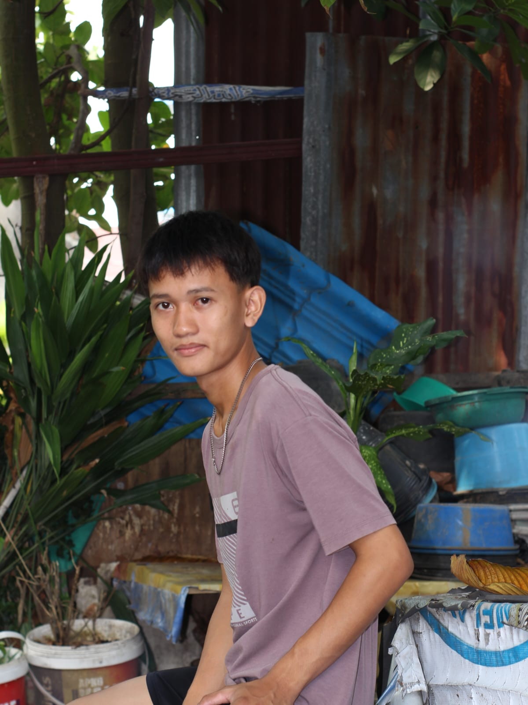

Teknik Informasi • Universitas Pembinaan Masyarakat Indonesia
Medan, Indonesia
Halo! Saya adalah mahasiswi aktif semester 1 program studi Teknologi informasi dengan ketertarikan mendalam pada pengembangan web (Frontend & Backend) serta UI/UX Design. Senang mempelajari teknologi baru dan aktif berorganisasi di kampus.
Teknologi Informasi
Teknik Komputer dan Jaringan